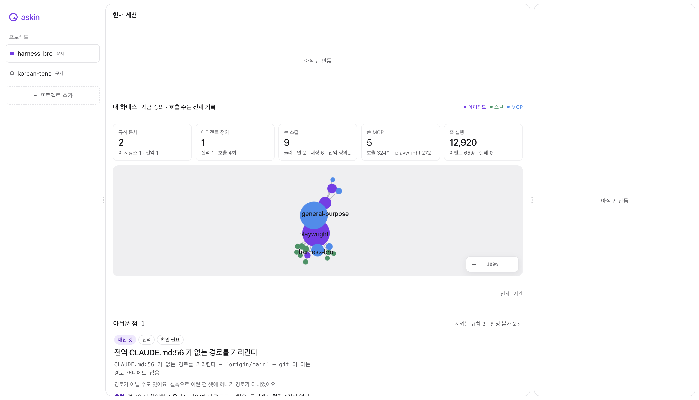

분모까지 같이 봐요.
위임 40건 중 6건에서 모델을 정하지 않았어요. 어느 기록에서 어긋났는지 보여주고, 서로 다른 지표를 종합 점수로 더하지 않아요.
만든 사람의 기록에서 · 2026. 09. 04.
6 / 40 모델 미지정
askin은 AI의 작업 기록을 읽고,
내가 만든 하네스가 어떻게 쓰이는지 보여줘요.
Claude Code · Codex 작업 기록을 내 컴퓨터에서
실선은 실제 호출, 점선은 선언한 연결이에요. 이름을 누르면 역할을 볼 수 있어요.
AI에게 정해준 일하는 방식, 그 전부가 하네스예요.
폴더 하나를 고르면 시작돼요. 흩어진 정의와 작업 기록을 모아 연결을 그리고, 먼저 살펴볼 곳을 짚어요.

에이전트와 스킬, MCP가 어떻게 이어지는지 보여줘요. 선언한 연결과 실제 호출을 구분해서 볼 수 있어요.
지키지 않은 규칙과 끊어진 참조를 찾아요. 어느 파일의 어떤 원문인지 확인하고, 고칠지 판단할 수 있어요.
잘하고 있다는 숫자 하나로는 무엇을 고쳐야 할지 알 수 없으니까요.
위임 40건 중 6건에서 모델을 정하지 않았어요. 어느 기록에서 어긋났는지 보여주고, 서로 다른 지표를 종합 점수로 더하지 않아요.
만든 사람의 기록에서 · 2026. 09. 04.
기록이 부족하면 0점 대신 ‘판정 불가’라고 말해요. 끊어진 경로처럼 보여도 실제로는 Git 참조일 수 있어요. 확인이 필요한 이유까지 남겨요.
Claude Code와 Codex의 작업 기록을 로컬에서 읽어요. 분석을 위해 대화를 서버에 올리지 않고, 원본 기록을 수정하지 않아요.
macOS · Apple Silicon
Apple Silicon 전용이에요. 소스와 이전 버전은 GitHub 저장소에 있어요.
서명하지 않은 빌드라 처음 열 때 우클릭 → 열기를 눌러야 해요. 그냥 더블클릭하면 macOS 가 막아요.